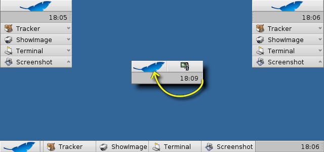

Català
Català Deutsch
Deutsch English
English Español
Español Français
Français Italiano
Italiano Magyar
Magyar Polski
Polski Português
Português Português (Brazil)
Português (Brazil) Română
Română Slovenčina
Slovenčina Suomi
Suomi Svenska
Svenska 中文 ［中文］
中文 ［中文］ Русский
Русский Українська
Українська 日本語
日本語| Índex |
|
The Deskbar Menu The Tray The list of running programs |
Barra de l'Escriptori
The Deskbar is the little panel that by default is located in the upper right corner of the screen. It's Haiku's version of Windows' taskbar with its Start button. It contains the Deskbar menu from where you can start applications and preferences, a tray with a clock and other tools below that and a list of currently running programs at the bottom.
You can move the Deskbar to any corner or as a bar along the upper or lower border of the screen by gripping the knobbly area on one side of the tray and drag&drop it into the new position. You can also fold it into a more compact layout by drag&dropping the knobbly area onto the Deskbar menu.
 The Deskbar Menu
The Deskbar Menu
A menu opens when you click on the Deskbar's top:

About this system... - Shows some basic information of the system, licenses and the credits of the Haiku project.
Find... - Opens the Query dialog.
Show replicants - Shows/hides the little Replicant widget you use to drag it around, remove or access its context menu.
Mount - Offers the same options as when invoked by right-clicking the Desktop (see Mounting Volumes).
Deskbar preferences... - Opens a panel to configure the Deskbar (see below).
Shutdown - Offers options to either or .
Recent documents, folders, applications - List of the last recently opened documents, folders and applications (see below).
Applications, Demos, Deskbar applets, Preferences - List of installed applications, demos, applets and preferences.
You can add links to other programs (or any folder, document, query etc.) by putting them into ~/config/settings/deskbar/menu/.
Deskbar Preferences

The Deskbar preference panel is devided into three sections.
Applications
The following settings don't apply to your installed applications, but to the behavior and visuals of the list of running applications.
| Sorts the list of running programs alphabetically. | ||
| Even if you sort alphabetically, the Tracker entry always stays first in the list. | ||
| Provides a small widget to show/hide all windows of a program directly under its entry in the Deskbar. | ||
| Newly launched programs have their windows automatically expanded under their entry in the Deskbar. | ||
| Removes the text labels of running applications. | ||
| Adjusts the icon size of running applications. |
Menu
While the first couple of menu items of the Deskbar are fixed, you can customized the ones below .
Here you can set the number of recent documents, folders and applications that are shown in their menu in the Deskbar, or if you want to see them at all.
The button opens the folder ~/config/settings/deskbar/menu/. In it you'll find the files and folders that appear in the Deskbar, by default these are , , , and .
You can delete or add entries like links to applications, documents or even queries by simply copying/deleting them to/from this folder.
Programs installed from a package automatically put an entry into the Deskbar. Depending on the number of packages you have installed, this can become a bit crowded. If you prefer to have total control, and only want to see applications you link there yourself (possibly in categorizing sub-folders), here's how to do it:
You create a link of the menu folder in ~/config/settings/deskbar/ and rename to menu_entries. From Terminal that is achieved with:
ln -s ~/config/settings/deskbar/menu ~/config/settings/deskbar/menu_entries
Window
Finally, the preferences for the Deskbar window.
| The Deskbar always stays above all other windows. | ||
| The Deskbar pops to the front if the mouse pointer touches it. | ||
| The Deskbar is reduced to only a few pixels and only pops up if the mouse pointer touches them. |
The Tray

Among other things, the tray is housing the clock. Hover the mouse over it to display the date in a tooltip. Left-click it to show a calendar. Right-click it to hide/show the clock or launch the Time preferences to set it.
Any program can install an icon in the tray to provide an interface to the user. The email system, for instance, shows a different symbol when there's unread mail and offers a context menu to e.g. create or check for new mail. ProcessController is another example that uses its icon in the tray to provide information (CPU/memory usage) and to offer a context menu.
The list of running programs

You can change to a specific running application by clicking on its entry in the Deskbar and choosing (one of) its windows from the submenu. By right-clicking you can windows or and with them the entire application.
A SHIFT CTRL click on an application hides all its windows, a CTRL click shows them again.
If you activated Expanders in the Deskbar settings, you can expand/collapse the list of windows directly under an application's entry.
In front of every application's windows is a symbol providing info on its state. A bright symbol means a window is visible, a dark one that it's minimized. Three lines in front of a symbol shows that it's not on the current workspace.